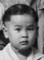

| 148,107,60,25 光 |
蟾光 Sẽm Göng Chánguāng |
|||||||||||
|---|---|---|---|---|---|---|---|---|---|---|---|---|
| 149,108,61,26 前 |
標前 名寶康 (入繼) Bēl Tẽin (Bāo Höng) Biāoqián (Bǎokāng) |
華前 Vã Tẽin Huáqián |
||||||||||
| 150,109,62,27 遠 |
碧霞 = ○新服 Bēik Hã = ○ Xïn Fùk Bìxiá = ○ Xīnfú |
偉文 Vī Mũn Wěiwén |
偉強 Vī Kẽng Wěiqiáng |
偉南 Vī Nãm Wěinán |
偉進 Vī Dïn Wěijìn |
偉超 Vī Chël Wěichāo |
碧雲 Bēik Vũn Bìyún |
杏權 Hàng Kũn Xìngquán |
杏超 Hàng Chël Xìngchāo |
杏思 Hàng Xü Xìngsī |
杏求 Hàng Kiũ Xìngqiú |
|
| 151,110,63,28 遵 |
 ○燦輝 ○ Tãn Fǐ ○ Cànhuī |
○旋 ○ Xũn ○ Xuán |
||||||||||